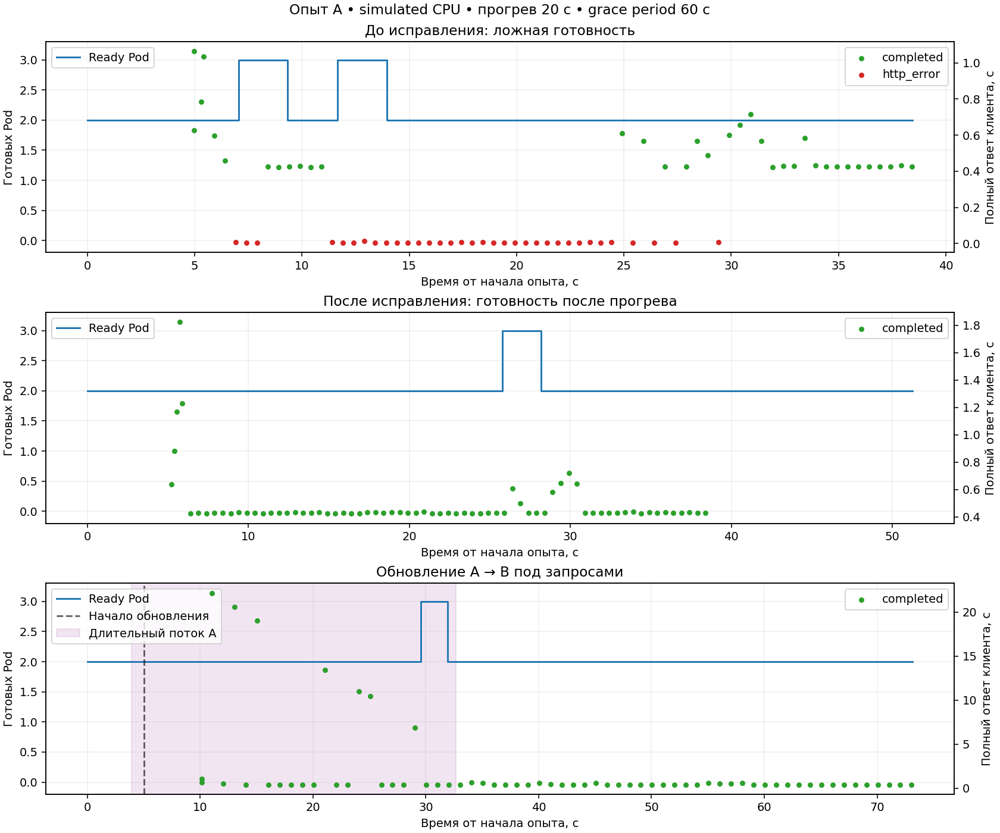
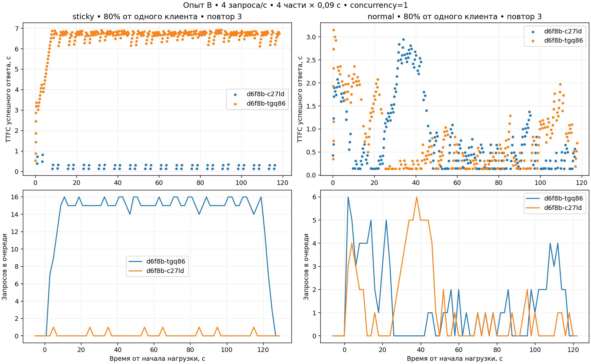
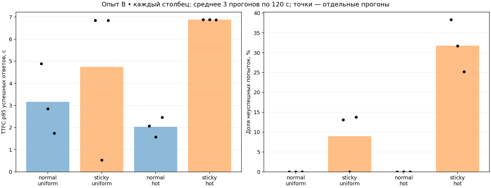
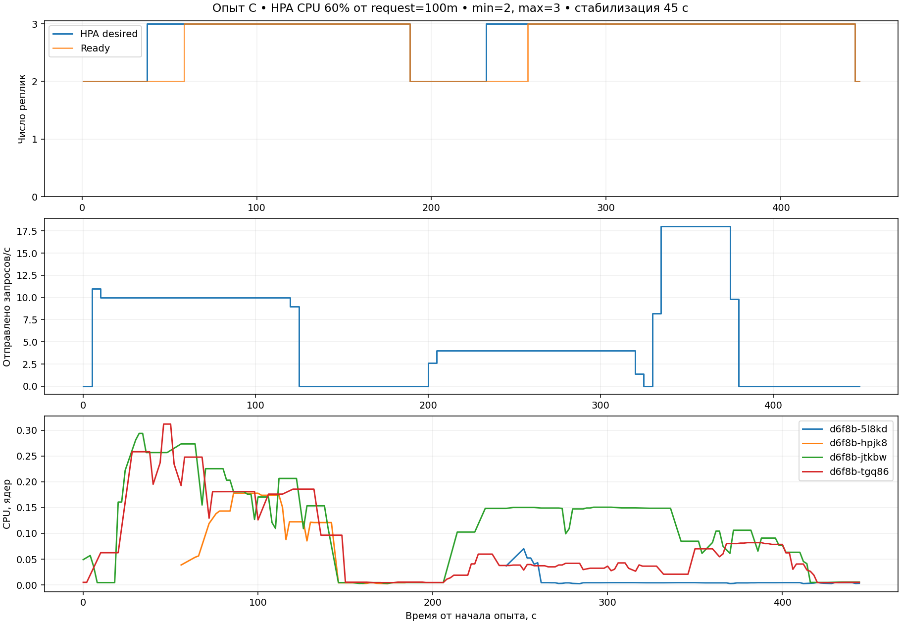

Продолжение сервиса ДЗ8–10. Стенд: Kubernetes в kind, две реплики FastAPI, Prometheus, Grafana и четыре клиентских Pod. Все HTTP-запросы и измерения выполнены в этом стенде.
backend_mode=simulated. Используется управляемый CPU-имитатор, разрешённый методичкой для всех 10 баллов. Веса LLM не загружались. Измерены время до первого фрагмента ответа (TTFC) и интервалы между фрагментами (inter-chunk latency). Результаты не являются скоростью реальной модели.
Образы закреплены digest в source/images-lock.json, Python-зависимости — в uv.lock и requirements с хешами. Версии запуска и ресурсы сохранены в results/versions.json, свободное место до запуска — в results/environment-before.json. Инструкция запуска и удаления — README.md.
Узел kind ограничен 3 ГиБ RAM и 4 CPU. У каждой API-копии запрошены 100m CPU (0,1 ядра) и 64 МиБ памяти; пределы — 800m CPU и 192 МиБ. Прогрев 20 с, startup допускает 90 с, readiness проверяется каждую секунду, liveness раз в 5 с. Grace period 60 с, завершение активных ответов Uvicorn — до 45 с. Prometheus: хранение 2 часа/128 МБ, том до 256 МиБ; Grafana — том до 128 МиБ. Фактическая верхняя оценка размеров образов: 3.36 ГБ; отдельного тома узла /var с внутренним containerd: 2.82 ГБ; записываемого слоя контейнера узла: 0.003 ГБ; каталога hw11 с локальными инструментами и окружением: 0.50 ГБ. Общие слои в сумме образов не вычтены. Подробности — results/footprint.json.
Артефакты A и B — маленькие JSON-файлы в immutable ConfigMap. При старте процесс пересчитывает SHA256, сверяет ожидаемое значение и только потом проходит прогрев. Модель и хеш берутся из реально загруженного файла. История диалога передаётся клиентом, локальный кеш не является хранилищем истории.
Имитатор один во всех сравнениях: concurrency=1, очередь до 16 запросов, timeout очереди 45 с; локальный кеш на 8 префиксов с вытеснением давно неиспользованных записей: найденный префикс стоит 40 мс CPU, отсутствующий — 160 мс CPU, вычисление части=3 мс CPU. Между частями есть заданная пауза. CPU-работа действительно выполняет криптографические вычисления PBKDF2 до заданного времени потока; это измеряемая вычислительная нагрузка, а не один sleep.
Гипотеза. Если startup/readiness проверяют только доступность HTTP, новая копия начинает обслуживать пользователей до прогрева.
До изменения. Режим BROKEN_PROBES=true оставляет именно этот дефект. Клиенты отправляли тот же набор запросов, что и после исправления. Сводка исходного и повторного опыта:
| run | sent | completed | outcomes |
|---|---|---|---|
| a-warmup-before | 70 | 36 | {'completed': 36, 'http_error': 34} |
| a-warmup-after | 70 | 70 | {'completed': 70} |
Причина и изменение. Запущенный HTTP-процесс ещё не означает готовую модель. startup/readiness теперь ждут завершения загрузки и прогрева, liveness проверяет только жизнь процесса. Подтверждения Ready, EndpointSlice и запросов сохранены в a-warmup-*-timeline.jsonl и logs/.
В первом пробном обновлении тайм-аут очереди 15 с привёл к двум HTTP 429 из 65 коротких запросов при занятом длинным ответом слоте. Сам длинный поток завершился. Исходные данные сохранены в results/initial-a/. Тайм-аут очереди увеличен до 45 с в пределах клиентского ожидания и grace period; ниже приведён полный повтор с тем же расписанием.
Штатное обновление. До начала A→B запущен длинный поток A. Новая B прогревается; старый процесс принимает оставшиеся соединения в коротком периоде распространения EndpointSlice, затем завершает активные ответы. В полном прогоне: 65 коротких запросов и один длинный; HTTP 5xx и незавершённых потоков — 0. Длительный ответ занял 28.76 с и пересёк начало обновления.
Неготовая ревизия B с контролируемым отказом прогрева не стала Ready и не вошла в рабочие endpoints. Затем выполнен управляемый возврат к A. Фактическая версия подтверждена ответами, а не только номером Helm-релиза. После замены Pod восстановились версия и диалог.
Принудительное завершение. Отдельный запрос направлен в выбранный Pod; его удаление с grace=0 оборвало уже начатый поток. Отправленные части и незавершённость записаны клиентом. ReplicaSet создал замену, она прошла прогрев; восстановление проверено HTTP-запросом. Журнал a-accounting.json хранит этот опыт отдельно от корректного обновления.

Гипотеза. Привязка к IP сохраняет локальный кеш, но при концентрации 80% запросов у одного клиента может перегрузить одну реплику. Обычная Service оставляет больше возможностей распределить работу.
Сравнивались Service normal (sessionAffinity=None) и sticky (ClientIP, timeout=30 с) над теми же Pod. Четыре клиента имеют разные IP; соединение создаётся заново для каждого запроса: keep-alive выключен в обеих политиках. Сеть kindnet, kube-proxy iptables. Фактические клиентские адреса, настройки и распределение — b-network.json и журналы request_arrived.
Два расписания: равномерное и 80% от client-0. В каждом 480 запросов за 120 с, одинаковые длины и 4 части с паузой 0,09 с. Кеш перед каждым прогоном пуст, backend уже прогрет. Для каждой комбинации выполнены три повтора. Плановое и фактическое время отправки записаны отдельно.
| run | sent | completed | ttfc_p50 | ttfc_p95 | response_p50 | response_p95 | error_rate | timeouts |
|---|---|---|---|---|---|---|---|---|
| b-normal-uniform-1 | 480 | 480 | 0.596 | 4.894 | 0.882 | 5.177 | 0.0 | 0 |
| b-sticky-uniform-1 | 480 | 417 | 6.52 | 6.842 | 6.804 | 7.126 | 0.1312 | 0 |
| b-normal-hot-1 | 480 | 480 | 0.527 | 2.069 | 0.814 | 2.353 | 0.0 | 0 |
| b-sticky-hot-1 | 480 | 296 | 6.757 | 6.881 | 7.043 | 7.167 | 0.3833 | 0 |
| b-normal-uniform-2 | 480 | 480 | 0.483 | 2.849 | 0.768 | 3.136 | 0.0 | 0 |
| b-sticky-uniform-2 | 480 | 480 | 0.142 | 0.534 | 0.427 | 0.819 | 0.0 | 0 |
| b-normal-hot-2 | 480 | 480 | 0.486 | 1.576 | 0.773 | 1.86 | 0.0 | 0 |
| b-sticky-hot-2 | 480 | 328 | 6.725 | 6.884 | 7.012 | 7.167 | 0.3167 | 0 |
| b-normal-uniform-3 | 480 | 480 | 0.491 | 1.743 | 0.777 | 2.028 | 0.0 | 0 |
| b-sticky-uniform-3 | 480 | 414 | 6.561 | 6.851 | 6.846 | 7.137 | 0.1375 | 0 |
| b-normal-hot-3 | 480 | 480 | 0.561 | 2.458 | 0.845 | 2.745 | 0.0 | 0 |
| b-sticky-hot-3 | 480 | 359 | 6.661 | 6.866 | 6.947 | 7.152 | 0.2521 | 0 |
p50 — медиана, p95 — значение, в которое укладываются 95% наблюдений. Все задержки в таблице указаны в секундах, error_rate — доля неуспешных отправленных попыток. Количество наблюдений для перцентилей — completed. Отклонённые, оборванные и просроченные попытки остаются в сырых данных и доле ошибок.
Для горячего трафика среднее по трём отдельным p95: normal=2.034 с, sticky=6.877 с. Средняя доля ошибок: normal=0.00%, sticky=31.74%. Это сводка трёх прогонов, не перцентиль объединённого потока.
Случай без перекоса. b-sticky-uniform-2: {'hw11-api-77f9dd6f8b-tgq86': 240, 'hw11-api-77f9dd6f8b-c27ld': 240}. Трасса показывает, какие клиентские IP закрепились за каждым Pod. Удачное закрепление может дать меньшую задержку, чем случайное распределение новых соединений, поэтому привязка не объявляется плохой при любом трафике.
Исправление. Убрана обязательная привязка ClientIP. Результат исправления — те же полные прогоны normal для обоих режимов нагрузки и трёх повторов. Общий кеш не добавлялся; повторный расчёт префикса возможен, зато запрос не обязан ждать перегруженную копию. Выбор нужно оценивать одновременно по задержке, отказам и распределению, не по одному cache hit.


Ограничения. Kubernetes Service выбирает путь для соединения, а не гарантирует строгое чередование запросов. Четыре ClientIP могут случайно попасть на копии равномерно или неравномерно. Отсутствие перекоса в конкретном прогоне также сохранено в таблице и объясняется фактическими pod/peer_ip. Полученные числа относятся к заданным стоимости кеша и скорости имитатора; их нельзя переносить на движок реальной модели.
Гипотеза. Вычислительная нагрузка поднимет CPU и вызовет рост с 2 до 3 копий. После снижения нагрузки HPA вернётся к минимуму. Само добавление копии не гарантирует перераспределения клиентов с ClientIP.
Первая фаза: 120 с, 10 запросов/с, 2 фрагмента с паузой 0,03 с. После возврата к двум копиям повторён горячий сценарий B: 120 с, 4 запроса/с, 4 фрагмента × 0,09 с, 80% запросов от одного клиента и пустой кеш. Для срабатывания алертов отдельно поданы 18 запросов/с в течение 45 с, по 8 фрагментов × 0,12 с, затем нагрузка снята.
HPA — механизм Kubernetes, меняющий число копий по метрикам нагрузки. Используется autoscaling/v2: CPU=60% от request=100m, min=2, max=3, окно стабилизации вниз 45 с. Доступность resource metrics API и CPU requests проверена. Наблюдаемое появление третьей копии: через 33.3 с от старта нагрузки; все три готовы через 55.4 с. Возврат к двум наблюдался через 61.0 с после окончания клиентского прогона. Это фактическое время, включающее цикл сбора метрик и управления; оно может превышать заданное окно.
Повторён горячий сценарий с ClientIP. Распределение отправленных запросов по обслужившим Pod: {'hw11-api-77f9dd6f8b-jtkbw': 416, 'hw11-api-77f9dd6f8b-tgq86': 64}. Готовых/созданных копий в конце этой фазы — 3; все их имена и времена создания сохранены в c-summary.json, поэтому копия без запросов также видна. Средняя CPU-метрика реагирует, когда суммарная загрузка превышает целевое среднее; один занятый Pod при остальных простаивающих может как вызвать рост, так и остаться ниже порога. Уже закреплённые IP продолжают поступать прежним получателям, поэтому новая копия может получать мало работы. Трасса c-hot и HPA conditions приложены.
Два алерта: p95 TTFC выше 0,5 с и доля отказов выше 10%; окно 30 с, минимум 10 исходов соответствующего типа, удержание 8 с. Управляемая перегрузка и последующая пауза записаны в *-alerts.jsonl: состояния inactive, pending и firing, затем возврат в inactive.

Клиент измеряет время time.monotonic(): TTFC=t_first−t_sent, полный ответ=t_finish−t_sent; inter-chunk latency — разности времён соседних содержательных частей. Маркер done не считается частью. Отправленные, completed, rejected, interrupted, timeout, HTTP/transport error учитываются отдельно. Повторы скрыто не выполняются. Все запланированные запросы сохранены в schedules/, фактические — requests.jsonl; это позволяет видеть задержку самого генератора.
Перцентили на клиенте рассчитаны только для полностью успешных ответов, с линейной интерполяцией между порядковыми статистиками. Доля ошибок включает все отправленные попытки. Для Histogram складываются bucket-счётчики с сохранением le, затем применяется histogram_quantile; перцентили разных Pod не усредняются. Для одинакового набора ответов сравниваются снимки до и после прогона с паузой для сбора метрик:
| run | n | client p95, с | Prometheus p95, с |
|---|---|---|---|
| b-normal-uniform-1 | 480 | 4.894 | 4.949367088607595 |
| b-sticky-uniform-1 | 417 | 6.842 | 7.757558139534884 |
| b-normal-hot-1 | 480 | 2.069 | 2.08 |
| b-sticky-hot-1 | 296 | 6.881 | 7.840860215053763 |
| b-normal-uniform-2 | 480 | 2.849 | 2.875 |
| b-sticky-uniform-2 | 480 | 0.534 | 0.56 |
| b-normal-hot-2 | 480 | 1.576 | 1.6346153846153846 |
| b-sticky-hot-2 | 328 | 6.884 | 7.821090909090909 |
| b-normal-uniform-3 | 480 | 1.743 | 1.7115384615384615 |
| b-sticky-uniform-3 | 414 | 6.851 | 7.766541353383458 |
| b-normal-hot-3 | 480 | 2.458 | 2.5319148936170213 |
| b-sticky-hot-3 | 359 | 6.866 | 7.80202205882353 |
Разница ожидаема: клиент включает доставку по сети; Prometheus интерполирует внутри bucket. Точные запросы, времена и исходные bucket-счётчики — results/prometheus/*-histogram-comparison.json; остальные PromQL — monitoring/promql.md.
Пять собственных проверок tests/test_kubernetes.py выполняют реальные HTTP-запросы из Kubernetes: прогрев; версия после отката; замена Pod с продолжением диалога; учёт отказов/обрыва; изоляция двух диалогов. Дополнительные локальные проверки проверяют SHA256, ограничение кеша и схему запросов. Полные результаты — results/kubernetes-tests.log и local-tests.log.
При заданных условиях новый запрос направил бы на свободную B. У A ожидание очереди уже 3 секунды, а B пересчитает префикс за 0,8 секунды. При прочих равных экономия пересчёта на A не компенсирует ожидание. Постоянную связь session_id→pod_id не принимаю как общее правило: полезно учитывать локальный кеш, но решение должно также учитывать очередь и доступную ёмкость.
До принятия политики нужны распределения задержек, длительности входов и ответов, стоимость cache hit/miss, пределы памяти и параллелизма, актуальность сведений об очереди, ошибки и поведение при всплесках. Новый запрос можно допускать, только если выбранная копия готова и её очередь не превысила ограничение; при исчерпании ёмкости нужен явный отказ или ограниченное ожидание. Бесконечные повторы увеличат перегрузку.
История диалога передаётся в запросе или хранится вне Pod. После потери A новая копия восстанавливает контекст из этой истории, даже если локальный кеш утрачен. Уже начатый поток остаётся на A до завершения в пределах grace period; переносить его посередине ответа нельзя. При аварийном обрыве клиент получает признак незавершённости, а новая попытка учитывается отдельно.
Это связано с кейсом Google Cloud / Vertex AI из сцены 70 лекции: маршрутизация сочетает повторное использование префикса с текущей очередью и ограничением допуска. Компания описывает настройку веса очереди, чтобы обходить горячие копии. Её показатели на реальных моделях — внешний пример, не результаты этого имитатора.
Репозиторий: beekfin/MLOps/hw11. Точный коммит сдачи определяется git log -1 --format=%H -- hw11. Условия задания и связь с предыдущим сервисом сохранены в source/. Все данные измерены локально; дополнительных опытов с GPU, SGLang или llm-d не заявляется.
Стенд одноузловой: проверена замена процессов/Pod, а не отказ физического узла. Нулевая доля обрывов относится к зафиксированному штатному обновлению и заданной нагрузке; принудительное завершение имеет отдельный журнал. Ограничения имитатора, TCP-балансировки и гистограмм учитываются при выводах.